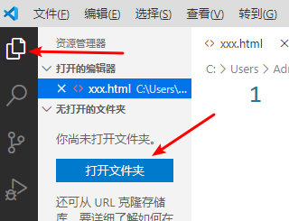
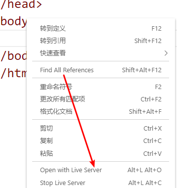

VSCode
1 下载
2 插件
2.1 Chinese 用来将界面语言改为简体中文
首先，打开 VSCode，点击如下图标，进入插件安装界面。
之后，在输入框，输入 Chinese，可以看到要安装的插件:
点击、安装、重启，即可。
2.2 Live Server 用来实时刷新 html 页面
首先，在 插件 界面，输入 live，可以看到 Live Server 的插件。
点击下载、安装。
如果想让当前编辑的 html 页面能够实时刷新。需要:
确保在 VSCode 中，已经将当前文件夹打开。如果没有，点击打开
 在 html 的编辑界面，右键点击打开 Live Server，会自动弹出页面。

在这个页面里，就能实时刷新了。注意，地址栏: